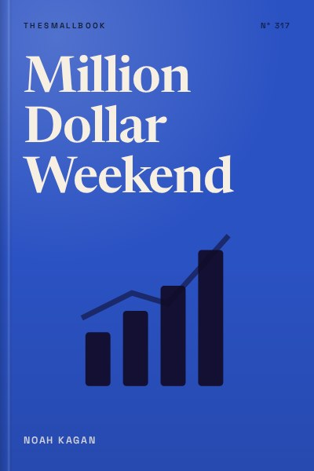

Library › Business & Startups
Million Dollar Weekend - Summary & Key Lessons

Stop planning, start selling. Build and test a business idea in 48 hours.
📖 OPEN THE FULL INTERACTIVE BREAKDOWN →🌐 Read it in Hindi, Hinglish, Gujarati, Tamil & 22 more languages, with audio.
💡 The Big Idea
Noah Kagan, an early Facebook employee and founder of AppSumo, argues that most people never start a business because they wait for the perfect idea, more money or more knowledge. His answer is the Million Dollar Weekend: a process to test a business idea quickly by asking people to pay before you build anything. The core is simple. Find a problem people already pay to solve, make a simple offer, ask for money and learn from rejection. He teaches readers to overcome fear of asking, to start with small experiments and to grow through simple marketing and systems. Action beats planning.
🧠 The 8 Key Lessons
Lesson 1: The Two Fears: Starting and Asking
Chapter 1: The Now Mentality
Kagan identifies two fears that stop most would-be entrepreneurs: the fear of starting and the fear of asking. People keep researching, planning and waiting for the right moment. They also fear rejection, so they never ask customers for money or help. Kagan's solution is a 'now' mentality: take the smallest possible action today. Starting reveals information that no amount of planning can provide.
📖 Example: Kagan describes how he started AppSumo with a tiny experiment: offering a discount bundle for a software product to a small audience. He did not build a full platform first. The positive response showed demand and gave him the confidence to grow it into a large business. Read the full example →
⚡ Do this: Write down one business idea you have been thinking about. Today, do one tiny action: message a potential customer, post a question online, or sketch a simple offer.
Lesson 2: Build Rejection Muscle With the Coffee Challenge
Chapter 2: The Coffee Challenge
To overcome fear of asking, Kagan suggests deliberate rejection practice. His famous 'coffee challenge' is to go to a café and ask for a ten percent discount on your coffee. Most people feel nervous, but the stakes are tiny. The goal is to get comfortable hearing no and to realise that rejection is rarely as painful as imagined. Over time, asking becomes easier, which is essential in business.
📖 Example: Kagan shares stories of readers who did the coffee challenge, felt awkward at first, but surprisingly received discounts or kind responses. The exercise built their confidence to ask customers, partners and investors for bigger things. Read the full example →
⚡ Do this: This week, ask for something small that you normally would not: a discount, a favour, a meeting. Note how it felt and what happened.
Lesson 3: Find Problems People Already Pay to Solve
Chapter 3: Finding Your Idea
Good business ideas often come from problems you or others already experience and pay to fix. Kagan recommends looking at your own frustrations, your skills and existing markets. Instead of inventing something entirely new, improve on something people already buy. He suggests brainstorming many ideas and choosing ones with clear demand and simple solutions.
📖 Example: Kagan describes ideas such as teaching a skill you already have, offering a service that saves people time, or creating a better version of an existing product. Many successful businesses start by serving a niche better than big competitors. Read the full example →
⚡ Do this: List ten problems you or people around you face and already spend money on. Circle the three you could help solve with your current skills.
Lesson 4: Validate With Money, Not Compliments
Chapter 4: Validation
Kagan insists that validation means someone paying you, not friends saying 'that is a great idea.' He recommends pre-selling: offer the product or service before you build it, and see if people pay. If they do, you have proof. If not, you have saved time and money. The 48-hour challenge is to find three paying customers in a weekend.
📖 Example: Kagan tells of people who validated ideas such as dog-walking services, cooking classes or software tools by directly messaging potential customers and asking for payment upfront. Those who got paying customers moved forward; those who did not adjusted quickly. Read the full example →
⚡ Do this: Create a simple offer for one idea (a message, a simple page or a form). Contact at least ten potential customers this weekend and ask them to pay or pre-order.
Lesson 5: The 1-Page Business Plan and Simple Offers
Chapter 5: Your Offer
Kagan prefers simple plans over long documents. A one-page plan should state who the customer is, what problem you solve, what you offer, how much it costs and how you will reach customers. Offers should be clear and easy to say yes to. He encourages starting with a minimal version and improving based on feedback.
📖 Example: Kagan shows examples of simple landing pages with a headline, a short description, a price and a buy button. Many successful products launched this way before having a full website or product. Read the full example →
⚡ Do this: Write a one-page plan for your idea with five lines: customer, problem, solution, price and first marketing channel.
Lesson 6: Grow Through an Email List and Content
Chapter 6: Marketing
Kagan emphasises owning your audience, especially through an email list. Social media platforms can change rules anytime, but email gives you direct access to customers. He recommends creating helpful content, offering something valuable in exchange for emails and communicating regularly. Consistent marketing compounds over time.
📖 Example: Kagan credits much of AppSumo's growth to its email list, which allowed the company to promote deals directly to millions of subscribers. He also describes building audiences through blogging and video content. Read the full example →
⚡ Do this: Start collecting emails or phone numbers of interested people today, even with a simple form. Send them one useful message each week.
Lesson 7: Systems and Time for Growth
Chapter 7: Systems
Once a business starts working, Kagan recommends creating systems so it does not depend entirely on you. Document repeated tasks, use simple tools, and delegate when possible. He also encourages blocking time each week for strategic thinking and experiments, not just daily operations.
📖 Example: Kagan describes how he moved from doing everything himself at AppSumo to creating processes and hiring people for customer service, marketing and operations, freeing him to focus on growth. Read the full example →
⚡ Do this: List the tasks you repeat every week in your work or business. Write a short checklist for one of them so someone else could do it.
Lesson 8: Keep Going: Small Steps Compound
Chapter 8: The Long Game
Kagan ends by encouraging persistence and continuous experimentation. Most businesses do not succeed overnight. Small, consistent actions such as reaching out to customers, improving offers and testing new ideas compound into big results. He reminds readers that starting is a skill and that each attempt builds experience.
📖 Example: Kagan reflects on his own failures and pivots, including projects that did not work, and how each taught him lessons that contributed to later successes. Read the full example →
⚡ Do this: Set a 30-day challenge: take one action toward your business every day, even if small. Track it on a calendar.
✅ 5-Step Action Plan
- Do the coffee challenge this week to practise asking.
- List ten problems people already pay to solve.
- Write a one-page plan for your best idea.
- Pre-sell to at least ten people in 48 hours.
- Start an email or WhatsApp list of interested customers.
⚠️ When This Doesn't Work
Kagan's 48-hour approach works best for simple services, digital products and small experiments. Businesses that need licences, factories, food safety approval or large capital cannot be validated so quickly. Also, in India, asking strangers for money can be harder culturally. Start with your network and adapt the method to local trust norms.
💀 The Graveyard Proves It
💬 Best Quotes from Million Dollar Weekend
- “Just start. The best way to learn is by doing.”
- “Validation means someone giving you money.”
- “Ask. The worst they can say is no.”
Interactive version: mark lessons as read, listen in your language, share quote cards.